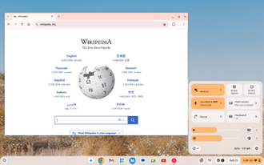
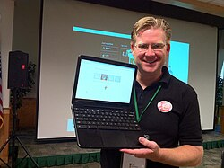
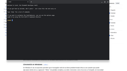

Chrome OS
Source: https://en.wikipedia.org/wiki/ChromeOS
Category: products_consumer
Depth: 1
Summary
ChromeOS is a proprietary operating system designed and developed by Google. It is derived from the open-source ChromiumOS operating system, and uses the Google Chrome web browser as its principal user interface.
Images



Full Article
Linux-based operating system developed by Google
This article is about the operating system. For the web browser, see Google Chrome.
Linux distribution
ChromeOS (sometimes styled as chromeOS and formerly styled as Chrome OS) is a proprietary operating system designed and developed by Google. It is derived from the open-source ChromiumOS operating system (which itself is derived from Gentoo Linux), and uses the Google Chrome web browser as its principal user interface.
Google announced the project in July 2009, initially describing it as an operating system where applications and user data would reside in the cloud. ChromeOS was used primarily to run web applications. The operating system first shipped with Chromebooks in 2011. It is also offered since 2020 as an installable Linux distribution as ChromeOS Flex.
ChromeOS supports progressive web applications, Android apps from Google Play and Linux applications.
Google announced that ChromeOS will merge with Android as part of a project in which the new project will use the Android system instead of the old "vanilla" Linux kernel based on Gentoo.
History
In 2006, Jeff Nelson, a Google employee, created the concept of what would become ChromeOS, initially codenamed "Google OS" as a Linux distribution focused on speed. Early versions of the Google operating system used Firefox as Chrome had not been released, though it switched to Chrome sometime in 2007 due to internal betas being passed around Google.
To ascertain marketing requirements, developers relied on informal metrics, including monitoring the usage patterns of 200 machines used by Google employees. Developers also noted their own usage patterns.
Google requested that its hardware partners use solid-state drives "for performance and reliability reasons" as well as the lower capacity requirements inherent in an operating system that accesses applications and most user data on remote servers. In November 2009, Matthew Papakipos, engineering director for the ChromeOS, announced that ChromeOS would only support solid-state storage (i.e. not mechanical hard-disks), and noted that ChromeOS only required one-sixtieth as much drive space as Windows 7. Ten years later, in 2019, the recovery images Google provided for ChromeOS were still only between 1 and 3 GB in size.
On November 19, 2009, Google released ChromeOS's source code as the ChromiumOS project. At a November 19, 2009 news conference, Sundar Pichai–at the time Google's vice president overseeing Chrome–demonstrated an early version of the operating system. He previewed a desktop which looked very similar to the desktop Chrome browser, and in addition to the regular browser tabs also had application tabs, which take less space and can be pinned for easier access. At the conference, the operating system booted up in seven seconds, a time Google said it would work to reduce. Additionally, Chris Kenyon, vice president of OEM services at Canonical Ltd, announced that Canonical was under contract to contribute engineering resources to the project with the intent to build on existing open-source components and tools where feasible.
Canonical was an early engineering partner on the project, and initially ChromiumOS could only be built on an Ubuntu system. In February 2010, the ChromiumOS development team switched to Gentoo Linux because Gentoo's package management system Portage was more flexible. The ChromiumOS build environment is no longer restricted to any particular distribution, but installation and quick-start guides use Debian's (and thus also Ubuntu's) apt syntax.
Early Chromebooks (2010)
In 2010, Google released the unbranded Cr-48 Chromebook in a pilot program. The launch date for retail hardware featuring ChromeOS was delayed from late 2010 until the next year.
On May 11, 2011, Google announced two Chromebooks from Acer and Samsung at Google I/O. The Samsung model was released on June 15, 2011, and the Acer model in mid-July. In August 2011, Netflix announced official support for ChromeOS through its streaming service, allowing Chromebooks to watch streaming movies and TV shows via Netflix. At the time, other devices had to use Microsoft Silverlight to play videos from Netflix. Later in that same month, Citrix released a client application for ChromeOS, allowing Chromebooks to access Windows applications and desktops remotely. Dublin City University became the first educational institution in Europe to provide Chromebooks for its students when it announced an agreement with Google in September 2011.
Expansion (2012)
By 2012, demand for Chromebooks had begun to grow, and Google announced a new range of devices, designed and manufactured by Samsung. In so doing, they also released the first Chromebox, the Samsung Series 3, which was ChromeOS' entrance into the world of desktop computers. Although they were faster than the previous range of devices, they were still underpowered compared to other desktops and laptops of the time, fitting in more closely with the Netbook market. Only months later, in October, Samsung and Google released a new Chromebook at a significantly lower price point ($250, compared to the previous Series 5 Chromebooks' $450). It was the first Chromebook to use an ARM processor, one from Samsung's Exynos line. To reduce the price, Google and Samsung also reduced the memory and screen resolution of the device. An advantage of using the ARM processor, however, was that the Chromebook did not require a fan. Acer followed quickly after with the C7 Chromebook, priced even lower ($199), but containing an Intel Celeron processor. One notable way Acer reduced the cost of the C7 was to use a laptop hard disk rather than a solid-state drive.
In April 2012, Google made the first update to ChromeOS's user interface since the operating system had launched, introducing a hardware-accelerated window manager called "Aura" along with a conventional taskbar. The additions marked a departure from the operating system's original concept of a single browser with tabs and gave ChromeOS the look and feel of a more conventional desktop operating system. "In a way, this almost feels as if Google is admitting defeat here", wrote Frederic Lardinois on TechCrunch. He argued that Google had traded its original version of simplicity for greater functionality. "That's not necessarily a bad thing, though, and may just help ChromeOS gain more mainstream acceptance as new users will surely find it to be a more familiar experience." Lenovo and HP followed Samsung and Acer in manufacturing Chromebooks in early 2013 with their own models. Lenovo specifically targeted their Chromebook at students, headlining their press release with "Lenovo Introduces Rugged ThinkPad Chromebook for Schools".
When Google released Google Drive, they also included Drive integration in ChromeOS version 20, released in July 2012. While ChromeOS had supported Adobe Flash since 2010, by the end of 2012 it had been fully sandboxed, preventing issues with Flash from affecting other parts of ChromeOS. This affected all versions of Chrome including ChromeOS.
Chromebook Pixel (2013)
Main article: Chromebook Pixel
Prior to 2013, Google had never made their own ChromeOS device. ChromeOS devices were designed, manufactured, and marketed by third-party manufacturers, with Google controlling the software side. This changed in February 2013 when Google released the Chromebook Pixel. The Chromebook Pixel was entirely Google-branded, and contained an Intel Core i5 processor, a high-resolution (2,560 × 1,700) touchscreen display, and a price competitive with business laptops.
2013–2025
By the end of 2013, analysts were undecided on the future of ChromeOS. Although there had been articles predicting the demise of ChromeOS since 2009, ChromeOS device sales continued to increase substantially year-over-year. In mid-2014, Time magazine published an article titled "Depending on Who's Counting, Chromebooks are Either an Enormous Hit or Totally Irrelevant", which detailed the differences in opinion. This uncertainty was further spurred by Intel's announcement of Intel-based Chromebooks, Chromeboxes, and an all-in-one offering from LG called the Chromebase.
Seizing the opportunity created by the end of life for Windows XP, Google pushed hard to sell Chromebooks to businesses, offering significant discounts in early 2014.
ChromeOS devices outsold Apple Macs worldwide for the year 2020.
Since July 2021, ChromeOS's embedded controller was changed to be based on a Google maintained fork of Zephyr, a real time operating system.
Pwnium competition
In March 2014, Google hosted a hacking contest aimed at computer security experts called "Pwnium". Similar to the Pwn2Own contest, they invited hackers from around the world to find exploits in ChromeOS, with prizes available for attacks. Two exploits were demonstrated there, and a third was demonstrated at that year's Pwn2Own competition. Google patched all of the issues within a week.
Material Design and app runtime for Chrome
Although the Google Native Client has been available on ChromeOS since 2010, there originally were few Native Client apps available, and most ChromeOS apps were still web apps. However, in June 2014, Google announced at Google I/O that ChromeOS would both synchronise with Android phones to share notifications and begin to run Android apps, installed directly from Google Play. This, along with the broadening selection of Chromebooks, laid the groundwork for future ChromeOS development.
At the same time, Google was also moving towards the then-new Material Design design language for its products, which it would bring to its web products as well as Android Lollipop. One of the first Material Design items to come to ChromeOS was a new default wallpaper. Google's Material Design experiment for ChromeOS were added to the stable version with Chrome 117.
Merger with Android
After some rumors, Google confirmed in July 2025 that ChromeOS will "merge" with Android under one unified platform. It was formally announced at the Snapdragon Summit in September 2025. Internally, it is known as codename Aluminium OS.
The existing Linux-based ChromeOS will be replaced by a desktop-optimized Android-based operating system. The same Android software would run on desktop and mobile and be adapted for the different display sizes. Like ChromeOS, the desktop version of Aluminium will work on both ARM and x86 processors. The latter port is expected to be the first mainline maintained x86 architecture version of Android.
Features
Functionality for small and medium businesses and Enterprise
Chrome Enterprise
Chrome Enterprise, launched in 2017, includes ChromeOS, Chrome Browser, Chrome devices and their management capabilities intended for business use. Businesses can access the standard ChromeOS features and unlock advanced features for business with the Chrome Enterprise Upgrade. Standard features include the ability to sync bookmarks and browser extensions across devices, cloud or native printing, multi-layered security, remote desktop, and automatic updates. Advanced features include Active Directory integration, unified endpoint management, advanced security protection, access to device policies and Google Admin console, guest access, kiosk mode, and whitelisting or blacklisting third-party apps managed on Google Play.
The education sector was an early adopter of Chromebooks, ChromeOS, and cloud-based computing. Chromebooks are widely used in classrooms and the advantages of cloud-based systems have been gaining an increased share of the market in other sectors as well, including financial services, healthcare, and retail. "The popularity of cloud computing and cloud-based services highlights the degree to which companies and business processes have become both internet-enabled and dependent." ICT managers cite a number of advantages of the cloud that have motivated the move. Among them are advanced security, because data is not physically on a single machine that can be lost or stolen. Deploying and managing cloud-native devices is easier because no hardware and software upgrades or virus definition updates are needed, and patching of OS and software updates are simpler. Simplified and centralized management decreases operational costs.
Employees can securely access files and work on any machine, increasing the shareability of Chrome devices. Google's Grab and Go program with Chrome Enterprise allows businesses deploying Chromebooks to provide employees access to a bank of fully charged computers that can be checked out and returned after some time.
From Chromebooks to Chromebox and Chromebase
In an early attempt to expand its enterprise offerings, Google released Chromebox for Meetings in February 2014. Chromebox for Meetings is a kit for conference rooms containing a Chromebox, a camera, a unit containing both a noise-cancelling microphone and speakers, and a remote control. It supports Google Hangouts meetings, Vidyo video conferences, and conference calls from UberConference.
Several partners announced Chromebox for Meetings models with Google, and in 2016 Google announced an all-in-one Chromebase for Meetings for smaller meeting rooms. Google targeted the consumer hardware market with the release of the Chromebook in 2011 and Chromebook Pixel in 2013, and sought access to the enterprise market with the 2017 release of the Pixelbook. The second-generation Pixelbook was released in 2019. In 2021 there are several vendors selling all-in-one Chromebase devices.
Enterprise response to Chrome devices
Google has partnered on Chrome devices with several leading OEMs, including Acer, ASUS, Dell, HP, Lenovo, and Samsung. In August 2019, Dell announced that two of its popular business-focused laptops would run ChromeOS and come with Chrome Enterprise Upgrade. The Latitude 5300 2-in-1 Chromebook Enterprise and Latitude 5400 Chromebook Enterprise were the result of a two-year partnership between Dell and Google. The machines come with a bundle of Dell's cloud-based support services that would enable enterprise ICT managers to deploy them in environments that also rely on Windows. The new laptop line "delivers the search giant's ChromeOS operating system in a form tailored for security-conscious organizations." Other OEMs that have launched devices with Chrome Enterprise Upgrade include Acer and HP.
With a broader range of hardware available, ChromeOS became an option for enterprises wishing to avoid a migration to Windows 10 before Windows 7 support was discontinued by Microsoft.
Hardware
Main articles: Chromebook, Chromebox, and Chromebit
Laptops running ChromeOS are known collectively as "Chromebooks". The first was the CR-48, a reference hardware design that Google gave to testers and reviewers beginning in December 2010. Retail machines followed in May 2011. A year later, in May 2012, a desktop design marketed as a "Chromebox" was released by Samsung. In March 2015 a partnership with AOPEN was announced and the first commercial Chromebox was developed.
In early 2014, LG Electronics introduced the first device belonging to the new all-in-one form factor called "Chromebase". Chromebase devices are essentially Chromebox hardware inside a monitor with a built-in camera, microphone and speakers.
The Chromebit is an HDMI dongle running ChromeOS. When placed in an HDMI slot on a television set or computer monitor, the device turns that display into a personal computer. The first device, announced in March 2015 was an Asus unit that shipped that November and which reached end of life in November 2020.
Chromebook tablets were introduced in March 2018 by Acer with their Chromebook Tab 10. Designed to rival the Apple iPad, it had an identical screen size and resolution and other similar specifications, a notable addition was a Wacom-branded stylus that does not require a battery or charging.
ChromeOS supports multi-monitor setups on devices with a video-out port, USB 3.0 Standard-A or USB-C, the latter being preferable.
On February 16, 2022, Google announced a development version of ChromeOS Flex—a distribution of ChromeOS that can be installed on conventional PC hardware to replace other operating systems such as Windows and macOS. It is similar to CloudReady, a distribution of ChromiumOS whose developers were acquired by Google in 2020.
ChromeOS Flex
ChromeOS Flex is an operating system maintained by Google that is based on ChromeOS. It is designed to be installed on devices that are not Chromebooks, such as on Windows and Mac computers. It shares much of the same features as ChromeOS, but there are some differences between the two. For example, there are some security differences, especially with hardware, lack of Google Play and Android app support, and differences in guarantees of performance and stability.
In December 2020, Google purchased Neverware, developer of Cloudready, a version of ChromiumOS designed to run on Windows and MacOS hardware. On February 15, 2022, Google announced "early access" to the ChromeOS Flex operating system. Google claims that the operating system is intended for older computers that may not properly run their current OS, and that the solution will eliminate the need for users to buy new hardware. In July 2022, Google officially launched the operating system. The blog post by them explains how Nordic Choice Hotels chose to switch to ChromeOS Flex after a ransomware attack.
Google offers a list of supported devices on their support site. Unsupported devices may not guarantee stability. The user will need a USB flash drive, a computer to create the installation media, and the computer to install the operating system on. Although Google offers a list of supported devices, they offer a general system requirements list. The minimum system requirements for ChromeOS Flex are:
- USB Flash Drive with a minimum of 8GB of storage
- The USB device must be bootable
- Full administrator access to the system BIOS or UEFI
- x86-64 processor from either Intel or AMD
- Minimum of 4GB system memory (RAM)
- Minimum of 16GB of internal storage, e.g. 120GB SSD
The user can use either the Chromebook Recovery Utility extension available from the Chrome Web Store, or download the installer image directly. After preparing the installation media, the user will then need to boot the machine from the USB flash drive. After booting into the installer, the user can try out the operating system before installation, and/or install it onto the machine directly. The user would follow the on-screen instructions of the installer, noting that all data on the device will be erased during the installation. After installation, the user can set up device management on the devices.
Software
ChromeOS automatic updates are available for 10 years for all Chromebook models manufactured in 2019 and onwards, these updates are for the operating system, browser and hardware. Google maintains a web page with their Auto Update policy and the end date for all ChromeOS devices manufactured.
Previously the automatic update period was 8 years, and shorter prior to that although the earlier models had continued to receive updates for longer.
Applications
Initially, ChromeOS was a pure thin client operating system that relied primarily on servers to host web applications and related data storage. Google gradually began encouraging developers to create "packaged applications", and later, Chrome Apps by employing HTML5, CSS, Adobe Shockwave, and JavaScript to provide a user experience closer to a native application.
In September 2014, Google launched App Runtime for Chrome (ARC), which allowed certain ported Android applications to run on ChromeOS. Runtime was launched with four Android applications: Duolingo, Evernote, Sight Words, and Vine. In 2016, the second version, ARC++, was introduced, using Linux kernel features cgroups and namespaces to make containers that can run Android apps in an isolated environment. As ARC++ removed the need to recompile apps, Google made Google Play available for ChromeOS, making most Android apps available for supported ChromeOS devices. ARC++ was introduced with Android Marshmallow and upgraded to Android Nougat and Android Pie. ARCVM launched in 2021 with Android 11 and runs on Android 13 starting with ChromeOS 117. ARCVM uses virtual machines to enhance the isolation of the Android environment in order to improve security and maintainability.
In 2018, Google announced plans for Linux on ChromeOS, also known as Crostini, allowing for desktop Linux applications. This capability was released to the stable channel (as an option for most machines) with Chrome 69 in October 2018, but was still marked as beta. This feature was officially released with Chrome 91.
In 2023, with version 119, Google released Valve Corporation's Steam for Chromebook (Beta) for playing video games on Chromebooks meeting minimum hardware requirements. Steam for Chromebook was developed under the codename Borealis, building off work for SteamOS for the Steam Deck, similarly built using a modified version of Arch Linux, running as a virtual machine. In August 2025, Google announced that they will end Steam for Chromebook support in January 2026.
Chrome Apps
Main article: Google Chrome App
From 2013 until January 2020, Google encouraged developers to build not just conventional Web applications for ChromeOS, but Chrome Apps (formerly known as Packaged Apps). In January 2020, Google's Chrome team announced its intent to phase out support for Chrome Apps in favor of "progressive web applications" (PWA) and Chrome extensions instead. In March 2020, Google stopped accepting new public Chrome Apps for the web store. According to Google, general support for Chrome Apps on ChromeOS will remain enabled, without requiring any policy setting, through June 2022.
From a user's perspective, Chrome Apps resemble conventional native applications: they can be launched outside of the Chrome browser, are offline by default, can manage multiple windows, and interact with other applications.
Integrated media player, file manager
Google integrated a media player into both ChromeOS and the Chrome browser, enabling users to play back MP3s, view JPEGs, and handle other multimedia files without connectivity. The integration also supports DRM videos.
ChromeOS also includes an integrated file manager, resembling those found on other operating systems, with the ability to display directories and the files they contain from both Google Drive and local storage, as well as to preview and manage file contents using a variety of Web applications, including Google Docs and Box. Since January 2015, ChromeOS can also integrate additional storage sources into the file manager, relying on installed extensions that use the File System Provider API.
Remote application access and virtual desktop access
In June 2010, Google's software engineer Gary Kačmarčík wrote that ChromeOS would access remote applications through a technology unofficially called "Chromoting", which would resemble Microsoft's Remote Desktop Connection. The name has since been changed to "Chrome Remote Desktop" and is like "running an application via Remote Desktop Services or by first connecting to a host machine by using RDP or VNC". Initial roll-outs of ChromeOS laptops (Chromebooks) indicate an interest in enabling users to access virtual desktops.
Android applications
At Google I/O 2014, a proof of concept showing Android applications, including Flipboard, running on ChromeOS was presented. In September 2014, Google introduced a beta version of the App Runtime for Chrome (ARC), which allows selected Android applications to be used on ChromeOS, using a Native Client-based environment that provides the platforms necessary to run Android software. Android applications do not require any modifications to run on ChromeOS, but may be modified to better support a mouse and keyboard environment. At its introduction, ChromeOS support was only available for selected Android applications.
In 2016, Google introduced the ability to run Android apps on supported ChromeOS devices, with access to Google Play in its entirety. The previous Native Client-based solution was dropped in favor of a container containing Android's frameworks and dependencies (initially based on Android Marshmallow), which allows Android apps to have direct access to the ChromeOS platform, and allow the OS to interact with Android contracts such as sharing. Engineering director Zelidrag Hornung explained that ARC had been scrapped due to its limitations, including its incompatibility with the Android Native Development Toolkit (NDK), and that it was unable to pass Google's own compatibility test suite.
Linux apps
All Chromebooks made since 2018, and some earlier models, can run Linux apps. As with Android apps, these apps can be installed and launched alongside other apps. Google maintains a list of devices that were launched before 2019 which support Linux apps.
Since 2013, it has been possible to run Linux applications in ChromeOS through the use of Crouton, a third-party set of scripts that allows access to a Linux distribution such as Ubuntu. However, in 2018 Google announced that desktop Linux apps were officially coming to ChromeOS. The main benefit claimed by Google of their official Linux application support is that it can run without enabling developer mode, keeping many of the security features of ChromeOS. It was noticed in the ChromiumOS source code in early 2018. Early parts of Crostini were made available for the Google Pixelbook via the dev channel in February 2018 as part of ChromeOS version 66, and it was enabled by default via the beta channel for testing on a variety of Chromebooks in August 2018 with version 69.
Architecture
Google's project for supporting Linux applications in ChromeOS is called Crostini, named for the Italian bread-based starter, and as a pun on Crouton. Crostini runs a virtual machine through a virtual machine monitor called crosvm, which uses Linux's built-in KVM virtualization tool. Although crosvm supports multiple virtual machines, the one used for running Linux apps, Termina, contains a basic ChromeOS kernel based on Gentoo, in which it runs containers based on LXD. In the interest of stability and recovery, no Linux apps run on the virtual machine itself; any installed Linux userland ecosystem runs in an isolated container, all of which are deployed and managed by the virtual machine. A Debian container with host system integration is provided by default. Users can install programs to this installation by using tools like APT within the container, or may grant access to .deb files stored on ChromeOS itself, which are copied and installed to the container. Users may also individually grant access to individual files or USB devices. Other distributions can be added using LXD, although not by default integrated with the Host System.
Architecture
ChromeOS is built on top of the Linux kernel. Originally based on Ubuntu, its base was changed to Gentoo Linux in February 2010. For Project Crostini, as of ChromeOS 121, Debian 12 (Bookworm) is the default container base image. In preliminary design documents for the ChromiumOS open-source project, Google described a three-tier architecture: firmware, browser and window manager, and system-level software and userland services.
- The firmware contributes to fast boot time by not probing for hardware, such as floppy disk drives, that are no longer common on computers, especially netbooks. The firmware also contributes to security by verifying each step in the boot process and incorporating system recovery.
- System-level software includes the Linux kernel that has been patched to improve boot performance. Userland software has been trimmed to essentials, with management by Upstart, which can launch services in parallel, re-spawn crashed jobs, and defer services in the interest of faster booting.
- The window manager handles user interaction with multiple client windows (much like other X window managers).
Shell access
ChromeOS includes the Chromium Shell, or "crosh", which documents minimal functionality such as ping at crosh start-up.
In developer mode, a full-featured bash shell (which is supposed to be used for development purposes) can be opened via VT-2, and is also accessible using the crosh command shell. It is also accessible via the key shortcut ctrl+alt+t. To access full privileges in shell (e.g. sudo) a root password is requested. For some time the default was "chronos" in ChromeOS and "facepunch" in ChromeOS Vanilla and later the default was empty, and instructions on updating it were displayed at each login.
Open source
ChromeOS is partially developed under the open-source ChromiumOS project. As with other open-source projects, developers can modify the code from ChromiumOS and build their own versions, whereas ChromeOS code is only supported by Google and its partners and only runs on hardware designed for the purpose. Unlike ChromiumOS, ChromeOS is automatically updated to the latest version.
ChromeOS on Windows
On Windows 8, exceptions allow the default desktop web browser to offer a variant that can run inside its full screen "Metro" shell and access features such as the Share charm, without necessarily needing to be written with Windows Runtime. Chrome's "Windows 8 mode" was previously a tablet-optimized version of the standard Chrome interface. In October 2013, the mode was changed on Developer channel to offer a variant of the ChromeOS desktop.
Design
Early in the project, Google provided publicly many details of ChromeOS's design goals and direction, although the company has not followed up with a technical description of the completed operating system.[citation needed]
User interface
Design goals for ChromeOS's user interface included using minimal screen space by combining applications and standard Web pages into a single tab strip, rather than separating the two. Designers considered a reduced window management scheme that would operate only in full-screen mode. Secondary tasks would be handled with "panels": floating windows that dock to the bottom of the screen for tasks like chat and music players. Split screens were also under consideration for viewing two pieces of content side by side. ChromeOS would follow the Chrome browser's practice of leveraging HTML5's offline modes, background processing, and notifications. Designers proposed using search and pinned tabs as a way to quickly locate and access applications.
Version 19 window manager and graphics engine
On April 10, 2012, a new build of ChromeOS offered a choice between the original full-screen window interface and overlapping, resizable windows, such as found on Microsoft Windows and Apple's macOS. The feature was implemented through the Ash window manager, which runs atop the Aura hardware-accelerated graphics engine. The April 2012 upgrade also included the ability to display smaller, overlapping browser windows, each with its own translucent tabs, browser tabs that can be "torn" and dragged to new positions or merged with another tab strip, and a mouse-enabled shortcut list across the bottom of the screen. One icon on the task bar shows a list of installed applications and bookmarks. Writing in CNET, Stephen Shankland argued that with overlapping windows, "Google is anchoring itself into the past" as both iOS and Microsoft's Metro interface are largely or entirely full-screen. Even so, "ChromeOS already is different enough that it's best to preserve any familiarity that can be preserved".
Printing
In 2016, Google included "Native CUPS Support" in ChromeOS as an experimental feature that became stable in 2020. With CUPS support turned on, it becomes possible to use most printers even if they do not support Google Cloud Print.
Google Cloud Print was a Google service that helps any application on any device to print on supported printers. While the cloud provides virtually any connected device with information access, the task of "developing and maintaining print subsystems for every combination of hardware and operating system—from desktops to netbooks to mobile devices—simply isn't feasible." The cloud service required the installation of a piece of software called proxy, as part of the ChromeOS. The proxy registered the printer with the service, managed the print jobs, provided the printer driver functionality, and gave status alerts for each job.
Google announced that Google Cloud Print would no longer be supported after December 31, 2020, and that the online service would not be available as of January 1, 2021.
Link handling
ChromeOS was designed to store user documents and files on remote servers. Both ChromeOS and the Chrome browser may introduce difficulties to end-users when handling specific file types offline; for example, when opening an image or document residing on a local storage device, it may be unclear whether and which specific Web application should be automatically opened for viewing, or the handling should be performed by a traditional application acting as a preview utility. Matthew Papakipos, ChromeOS engineering director, noted in 2010 that Windows developers have faced the same fundamental problem: "Quicktime is fighting with Windows Media Player, which is fighting with Chrome."
Release channels and updates
ChromeOS uses the same release system as Google Chrome: there are three distinct channels: Stable, Beta, and Developer preview (called the "Dev" channel). The stable channel is updated with features and fixes that have been thoroughly tested in the Beta channel, and the Beta channel is updated approximately once a month with stable and complete features from the Developer channel. New ideas get tested in the Developer channel, which can be very unstable at times. A fourth canary channel was confirmed to exist by Google Developer Francois Beaufort and hacker Kenny Strawn, by entering the ChromeOS shell in developer mode, typing the command shell to access the bash shell, and finally entering the command update_engine_client -channel canary-channel -update. It is possible to return to the verified boot mode after entering the canary channel, but the channel updater disappears and the only way to return to another channel is using the "powerwash" factory reset. In 2022 2 New channels were added called LTC (Long-term support candidate) and LTS (Long-term support) Only available for Enterprise admins, LTC is for 3 months of support and then switched to LTS automatically
Security
In March 2010, Google software security engineer Will Drewry discussed ChromeOS security. Drewry described ChromeOS as a "hardened" operating system featuring auto-updating and sandbox features that would reduce malware exposure. He said that ChromeOS netbooks would be shipped with Trusted Platform Module (TPM), and include both a "trusted boot path" and a physical switch under the battery compartment that activates a "developer mode". That mode drops some specialized security functions but increases developer flexibility. This switch is also reversible. Drewry also emphasized that the open-source nature of the operating system would contribute greatly to its security by allowing constant developer feedback.
At a December 2010 press conference, Google declared that ChromeOS would be the most secure consumer operating system due in part to a verified boot ability, in which the initial boot code, stored in read-only memory, checks for system compromises.
ChromeOS devices ship with full disk encryption by default, which cannot be disabled. The decryption password is stored in the device's TPM. Google allows the TPM to be updated manually via the settings. Updating the TPM will reset the device to factory defaults.
Login
ChromeOS devices utilize a user's Google Account password as the default sign-in method. To enhance security, users can implement additional authentication measures such as PINs, passwords, fingerprint recognition, facial recognition, or smart unlock (via a paired phone). These supplementary measures mitigate the risk of unauthorized access to the user's Google account via shoulder surfing, even if an attacker possesses the user's Google email address.
If multi-factor authentication (MFA) is enabled on the associated Google Account, the user may be prompted to use it during the initial setup of their ChromeOS device. By default, the device will be designated as "trusted," exempting it from MFA requirements for subsequent logins. For enhanced security, MFA can be mandated for each sign-in by utilizing hardware tokens (such as YubiKeys) linked to the Google Account.
Reception
At its debut, ChromeOS was viewed as a competitor to Microsoft, both directly to Microsoft Windows and indirectly the company's word processing and spreadsheet applications—the latter through ChromeOS' reliance on cloud computing. But ChromeOS engineering director Matthew Papakipos argued that the two operating systems would not fully overlap in functionality because ChromeOS is intended for netbooks, which lack the computational power to run a resource-intensive program like Adobe Photoshop.
Some observers claimed that other operating systems already filled the niche that ChromeOS was aiming for, with the added advantage of supporting native applications in addition to a browser. Tony Bradley of PC World wrote in November 2009:
We can already do most, if not all, of what ChromeOS promises to deliver. Using a Windows 7 or Linux-based netbook, users can simply not install anything but a web browser and connect to the vast array of Google products and other web-based services and applications. Netbooks have been successful at capturing the low-end PC market, and they provide a web-centric computing experience today. I am not sure why we should get excited that a year from now we'll be able to do the same thing, but locked into doing it from the fourth-place web browser.
In 2016, Chromebooks were the most popular computer in the US K–12 education market.
In 2020, Chromebooks became the second most-popular end-user oriented OS (growing from 6.4% in 2019 to 10.8% in 2020). The majority of growth came at Windows' expense (which fell from 85.4% in 2019 to 80.5% in 2021).
Relationship to Android
Google's offer of several open-source operating systems, of which Android and ChromeOS are the best known, has attracted some criticism, despite the similarity between this situation and that of Apple Inc.'s two operating systems, macOS and iOS. Steve Ballmer, Microsoft CEO at the time, accused Google of not being able to make up its mind. Steven Levy wrote that "the dissonance between the two systems was apparent" at Google I/O 2011. The event featured a daily press conference in which each team leader, Android's Andy Rubin and Chrome's Sundar Pichai, "unconvincingly tried to explain why the systems weren't competitive". Google co-founder Sergey Brin addressed the question by saying that owning two promising operating systems was "a problem that most companies would love to face". Brin suggested that the two operating systems "will likely converge over time". The speculation over convergence increased in March 2013 when ChromeOS chief Pichai replaced Rubin as the senior vice president in charge of Android, thereby putting Pichai in charge of both.
The relationship between Android and ChromeOS became closer at Google I/O 2014, where developers demonstrated native Android software running on ChromeOS through a Native Client-based runtime. In September 2014, Google introduced a beta version of the App Runtime for Chrome (ARC), which allows selected Android applications to be used on ChromeOS, using a Native Client-based environment that provides the platforms necessary to run Android software. Android applications do not require any modifications to run on ChromeOS, but may be modified to better support a mouse and keyboard environment. At its introduction, ChromeOS support was only available for selected Android applications. In October 2015, The Wall Street Journal reported that ChromeOS would be folded into Android so that a single OS would result by 2017. The resulting OS would be Android, but it would be expanded to run on laptops. Google responded that while the company has "been working on ways to bring together the best of both operating systems, there's no plan to phase out ChromeOS".
In 2016, Google introduced the ability to run Android apps on supported ChromeOS devices, with access to Google Play in its entirety. The previous Native Client-based solution was dropped in favor of a container containing Android's frameworks and dependencies (initially based on Android Marshmallow), which allows Android apps to have direct access to the ChromeOS platform, and allows the OS to interact with Android contracts such as sharing. Engineering director Zelidrag Hornung explained that ARC had been scrapped due to its limitations, including its incompatibility with the Android Native Development Toolkit (NDK), and that it was unable to pass Google's own compatibility test suite.
On November 18, 2024, Android Authority reported that Google is planning to completely merge ChromeOS into Android.
See also
 Internet portal
Internet portal- Fuchsia (operating system)
- Light-weight Linux distribution
- List of operating systems
- QWERTY § ChromeOS for information on typing diacritics (accents) and special symbols
- Timeline of operating systems

Notes
References
External links

Wikimedia Commons has media related to Chrome OS.
- Official website
- Official blog
- Release blog
- ChromiumOS project page
- Official announcement
- Google Chrome OS Live Webcast; November 19, 2009
- ChromeOS Flex
| - v - t - e Linux distributions | |
|---|---|
| Android | |
| Arch | - ArchBang - Artix - BlackArch - CachyOS - EndeavourOS - Garuda - Hyperbola GNU - LinHES - Manjaro - Omarchy - Parabola GNU - SteamOS (3.0 onwards) - SystemRescue |
| Debian | |
| Fedora | |
| Gentoo | - Calculate Linux - ChromiumOS (ChromeOS) - Pentoo |
| Mandrake | - ALT Linux - PCLinuxOS |
| Mandriva | - Mageia - OpenMandriva Lx - ROSA Linux |
| Slackware | - Austrumi Linux - Porteus - Salix OS - Slax - Zenwalk |
| SUSE | - openSUSE - SUSE Linux Enterprise - Open Enterprise Server - GeckoLinux |
| Other | - 4MLinux - Alpine - Chimera Linux - CRUX - Kwort - GoboLinux - Guix SD - KaiOS - KaOS - Linux from Scratch - NixOS - postmarketOS - Puppy - RED OS - Source Mage - Solus - T2 SDE - Tiny Core Linux - Void |
| Discontinued | |
| - List - Comparison - icon Linux portal - Category |
| - v - t - e Unix and Unix-like operating systems and compatibility layers | |
|---|---|
| - Architecture - Filesystem - History - Philosophy - Security - Shell | |
| Operating systems | |
| Compatibility layers | - Cygwin - Darling - Eunice - GNV - Interix - MachTen - Microsoft POSIX subsystem - MKS Toolkit - PASE - P.I.P.S. - PWS/VSE-AF - UNIX System Services - UserLAnd Technologies - Windows Services for UNIX - Windows Subsystem for Linux |
| - Italics indicate discontinued systems. Category - Commons |
| - v - t - e Operating systems | |
|---|---|
| General | - Comparison - Forensic engineering - History - List - Timeline - Usage share - User features comparison |
| Variants | - Disk operating system - Distributed operating system - Embedded operating system - Hobbyist operating system - Just enough operating system - Mobile operating system - Network operating system - Object-oriented operating system - Real-time operating system - Supercomputer operating system |
| Kernel | |
| Process management | |
| Memory management, resource protection | - Bus error - General protection fault - Memory paging - Memory protection - Protection ring - Segmentation fault - Virtual memory |
| Storage access, file systems | - Boot loader - Defragmentation - Device file - File attribute - Inode - Journal - Partition - Virtual file system - Virtual tape library |
| Supporting concepts | - API - Computer network - HAL - Live CD - Live USB - Shell - CLI - User interface - PXE |
| - v - t - e Google | |
|---|---|
| a subsidiary of Alphabet | |
| Company | |
| Development | |
| Software | |
| Hardware | |
| - v - t - e Litigation | |
| Related | |
| Italics denote discontinued products. - Category - Outline |
| Authority control databases Edit this at Wikidata | - GND |